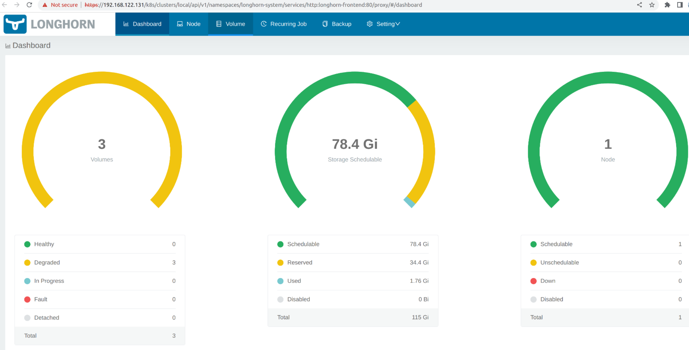
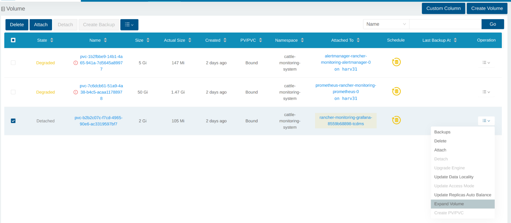
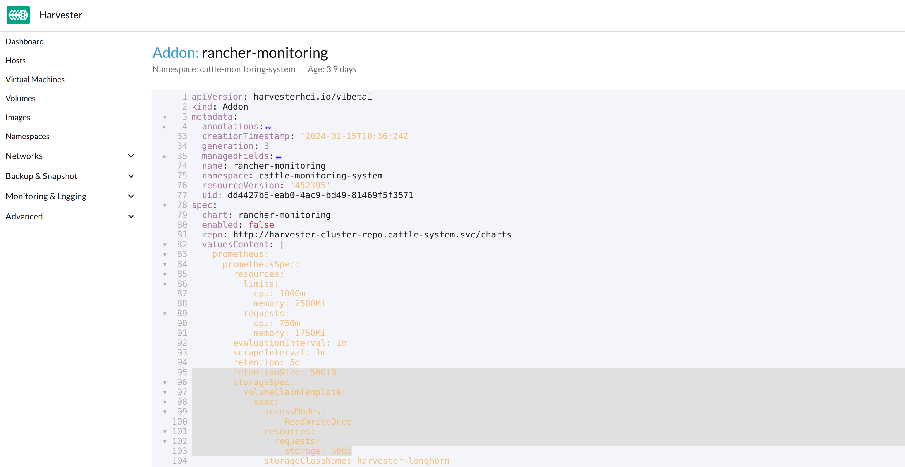

Questões de Monitoramento
O monitoramento está inutilizável
Quando o SUSE Virtualization Painel não exibe nenhuma métrica de monitoramento, isso pode ser causado pelos seguintes motivos.
O monitoramento está inutilizável devido ao Pod estar preso no status Terminating
SUSE Virtualization Os pods de monitoramento são implantados aleatoriamente nos Nós do cluster. Quando o Nó que hospeda os pods cai acidentalmente, os pods relacionados podem ficar presos no status Terminating, tornando o monitoramento inutilizável na WebUI.
$ kubectl get pods -n cattle-monitoring-system
NAMESPACE NAME READY STATUS RESTARTS AGE
cattle-monitoring-system prometheus-rancher-monitoring-prometheus-0 3/3 Terminating 0 3d23h
cattle-monitoring-system rancher-monitoring-admission-create-fwjn9 0/1 Terminating 0 137m
cattle-monitoring-system rancher-monitoring-crd-create-9wtzf 0/1 Terminating 0 137m
cattle-monitoring-system rancher-monitoring-grafana-d9c56d79b-ph4nz 3/3 Terminating 0 3d23h
cattle-monitoring-system rancher-monitoring-grafana-d9c56d79b-t24sz 0/3 Init:0/2 0 132m
cattle-monitoring-system rancher-monitoring-kube-state-metrics-5bc8bb48bd-nbd92 1/1 Running 4 4d1h
...O monitoramento pode ser recuperado usando comandos CLI para forçar a exclusão dos pods relacionados. O cluster irá implantar novos pods para substituí-los.
# Delete each none-running Pod in namespace cattle-monitoring-system.
$ kubectl delete pod --force -n cattle-monitoring-system prometheus-rancher-monitoring-prometheus-0
pod "prometheus-rancher-monitoring-prometheus-0" force deleted
$ kubectl delete pod --force -n cattle-monitoring-system rancher-monitoring-admission-create-fwjn9
$ kubectl delete pod --force -n cattle-monitoring-system rancher-monitoring-crd-create-9wtzf
$ kubectl delete pod --force -n cattle-monitoring-system rancher-monitoring-grafana-d9c56d79b-ph4nz
$ kubectl delete pod --force -n cattle-monitoring-system rancher-monitoring-grafana-d9c56d79b-t24szAguarde alguns minutos para que os novos pods sejam criados e preparados para que o painel de monitoramento possa ser utilizado novamente.
$ kubectl get pods -n cattle-monitoring-system
NAME READY STATUS RESTARTS AGE
prometheus-rancher-monitoring-prometheus-0 0/3 Init:0/1 0 98s
rancher-monitoring-grafana-d9c56d79b-cp86w 0/3 Init:0/2 0 27s
...
$ kubectl get pods -n cattle-monitoring-system
NAME READY STATUS RESTARTS AGE
prometheus-rancher-monitoring-prometheus-0 3/3 Running 0 7m57s
rancher-monitoring-grafana-d9c56d79b-cp86w 3/3 Running 0 6m46s
...Expandir Tamanho do PV/Volume
SUSE Virtualization integra SUSE Storage como o provedor de armazenamento padrão.
SUSE VirtualizationO monitoramento utiliza Volume Persistente (PV) para armazenar dados em execução. Quando um cluster está em funcionamento por um certo tempo, o Volume Persistente pode precisar expandir seu tamanho.
Para informações sobre como aumentar o tamanho do volume, consulte Expansão de Volume na documentação SUSE Storage.
Ver Volume
Do UI Embutido SUSE Storage
Acesse a UI embutida SUSE Storage de acordo com este documento.
A visualização padrão do SUSE Storage painel.

Clique em Volume para listar todos os volumes existentes.

Do CLI
Você também pode usar kubectl para obter todos os Volumes.
# kubectl get pvc -A NAMESPACE NAME STATUS VOLUME CAPACITY ACCESS MODES STORAGECLASS AGE cattle-monitoring-system alertmanager-rancher-monitoring-alertmanager-db-alertmanager-rancher-monitoring-alertmanager-0 Bound pvc-1b2fbbe9-14b1-4a65-941a-7d5645a89977 5Gi RWO harvester-longhorn 43h cattle-monitoring-system prometheus-rancher-monitoring-prometheus-db-prometheus-rancher-monitoring-prometheus-0 Bound pvc-7c6dcb61-51a9-4a38-b4c5-acaa11788978 50Gi RWO harvester-longhorn 43h cattle-monitoring-system rancher-monitoring-grafana Bound pvc-b2b2c07c-f7cd-4965-90e6-ac3319597bf7 2Gi RWO harvester-longhorn 43h # kubectl get volume -A NAMESPACE NAME STATE ROBUSTNESS SCHEDULED SIZE NODE AGE longhorn-system pvc-1b2fbbe9-14b1-4a65-941a-7d5645a89977 attached degraded 5368709120 harv31 43h longhorn-system pvc-7c6dcb61-51a9-4a38-b4c5-acaa11788978 attached degraded 53687091200 harv31 43h longhorn-system pvc-b2b2c07c-f7cd-4965-90e6-ac3319597bf7 attached degraded 2147483648 harv31 43h
Reduzir uma Implantação
Para desanexar o Volume, você precisa reduzir a deployment que usa o Volume.
O exemplo abaixo é contra o PVC reivindicado por rancher-monitoring-grafana.
Encontre o deployment no namespace cattle-monitoring-system.
# kubectl get deployment -n cattle-monitoring-system NAME READY UP-TO-DATE AVAILABLE AGE rancher-monitoring-grafana 1/1 1 1 43h // target deployment rancher-monitoring-kube-state-metrics 1/1 1 1 43h rancher-monitoring-operator 1/1 1 1 43h rancher-monitoring-prometheus-adapter 1/1 1 1 43h
Reduza a implantação rancher-monitoring-grafana para 0.
# kubectl scale --replicas=0 deployment/rancher-monitoring-grafana -n cattle-monitoring-system
Verifique a implantação e o volume.
# kubectl get deployment -n cattle-monitoring-system NAME READY UP-TO-DATE AVAILABLE AGE rancher-monitoring-grafana 0/0 0 0 43h // scaled down rancher-monitoring-kube-state-metrics 1/1 1 1 43h rancher-monitoring-operator 1/1 1 1 43h rancher-monitoring-prometheus-adapter 1/1 1 1 43h # kubectl get volume -A NAMESPACE NAME STATE ROBUSTNESS SCHEDULED SIZE NODE AGE longhorn-system pvc-1b2fbbe9-14b1-4a65-941a-7d5645a89977 attached degraded 5368709120 harv31 43h longhorn-system pvc-7c6dcb61-51a9-4a38-b4c5-acaa11788978 attached degraded 53687091200 harv31 43h longhorn-system pvc-b2b2c07c-f7cd-4965-90e6-ac3319597bf7 detached unknown 2147483648 43h // volume is detached
Expandir Volume
Na interface do SUSE Storage, o volume relacionado se torna Detached. Clique no ícone na coluna Operation e selecione Expand Volume.

Insira um novo tamanho e SUSE Storage expandirá o volume para esse tamanho.

Aumentar uma Implantação
Após o Volume ser expandido para o tamanho alvo, você precisa aumentar a implantação mencionada para suas réplicas originais. Para o exemplo acima de rancher-monitoring-grafana, as réplicas originais são 1.
# kubectl scale --replicas=1 deployment/rancher-monitoring-grafana -n cattle-monitoring-system
Verifique a implantação novamente.
# kubectl get deployment -n cattle-monitoring-system NAME READY UP-TO-DATE AVAILABLE AGE rancher-monitoring-grafana 1/1 1 1 43h // scaled up rancher-monitoring-kube-state-metrics 1/1 1 1 43h rancher-monitoring-operator 1/1 1 1 43h rancher-monitoring-prometheus-adapter 1/1 1 1 43h
O Volume está anexado ao novo POD.

No momento, o Volume está expandido para o novo tamanho e o POD o utiliza sem problemas.
Falha ao habilitar o Complemento rancher-monitoring
Você pode encontrar isso ao instalar SUSE Virtualization v1.3.0 ou posterior em um cluster com o tamanho mínimo de disco necessário.
Reproduzir Passos
-
Instale o cluster SUSE Virtualization.
-
Ative o
rancher-monitoringcomplemento, você observará:-
O POD
prometheus-rancher-monitoring-prometheus-0no namespacecattle-monitoring-systemfalha ao iniciar devido à falha do PVC anexado.$ kubectl get pods -n cattle-monitoring-system NAME READY STATUS RESTARTS AGE alertmanager-rancher-monitoring-alertmanager-0 2/2 Running 0 3m22s helm-install-rancher-monitoring-4b5mx 0/1 Completed 0 3m41s prometheus-rancher-monitoring-prometheus-0 0/3 Init:0/1 0 3m21s // stuck in this status rancher-monitoring-grafana-d6f466988-hgpkb 4/4 Running 0 3m26s rancher-monitoring-kube-state-metrics-7659b76cc4-66sr7 1/1 Running 0 3m26s rancher-monitoring-operator-595476bc84-7hdxj 1/1 Running 0 3m25s rancher-monitoring-prometheus-adapter-55dc9ccd5d-pcrpk 1/1 Running 0 3m26s rancher-monitoring-prometheus-node-exporter-pbzv4 1/1 Running 0 3m26s $ kubectl describe pod -n cattle-monitoring-system prometheus-rancher-monitoring-prometheus-0 Name: prometheus-rancher-monitoring-prometheus-0 Namespace: cattle-monitoring-system Priority: 0 Service Account: rancher-monitoring-prometheus ... Events: Type Reason Age From Message ---- ------ ---- ---- ------- Warning FailedScheduling 3m48s (x3 over 4m15s) default-scheduler 0/1 nodes are available: pod has unbound immediate PersistentVolumeClaims. preemption: 0/1 nodes are available: 1 Preemption is not helpful for scheduling.. Normal Scheduled 3m44s default-scheduler Successfully assigned cattle-monitoring-system/prometheus-rancher-monitoring-prometheus-0 to harv41 Warning FailedMount 101s kubelet Unable to attach or mount volumes: unmounted volumes=[prometheus-rancher-monitoring-prometheus-db], unattached volumes=[prometheus-rancher-monitoring-prometheus-db], failed to process volumes=[]: timed out waiting for the condition Warning FailedAttachVolume 90s (x9 over 3m42s) attachdetach-controller AttachVolume.Attach failed for volume "pvc-bbe8760d-926c-484a-851c-b8ec29ae05c0" : rpc error: code = Aborted desc = volume pvc-bbe8760d-926c-484a-851c-b8ec29ae05c0 is not ready for workloads $ kubectl get pvc -A NAMESPACE NAME STATUS VOLUME CAPACITY ACCESS MODES STORAGECLASS AGE cattle-monitoring-system prometheus-rancher-monitoring-prometheus-db-prometheus-rancher-monitoring-prometheus-0 Bound pvc-bbe8760d-926c-484a-851c-b8ec29ae05c0 50Gi RWO harvester-longhorn 7m12s $ kubectl get volume -A NAMESPACE NAME DATA ENGINE STATE ROBUSTNESS SCHEDULED SIZE NODE AGE longhorn-system pvc-bbe8760d-926c-484a-851c-b8ec29ae05c0 v1 detached unknown 53687091200 6m55s -
O Gerenciador Longhorn não consegue agendar a réplica.
$ kubectl logs -n longhorn-system longhorn-manager-bf65b | grep "pvc-bbe8760d-926c-484a-851c-b8ec29ae05c0" time="2024-02-19T10:12:56Z" level=error msg="There's no available disk for replica pvc-bbe8760d-926c-484a-851c-b8ec29ae05c0-r-dcb129fd, size 53687091200" func="schedule r.(*ReplicaScheduler).ScheduleReplica" file="replica_scheduler.go:95" time="2024-02-19T10:12:56Z" level=warning msg="Failed to schedule replica" func="controller.(*VolumeController).reconcileVolumeCondition" file="volume_controller.go:169 4" accessMode=rwo controller=longhorn-volume frontend=blockdev migratable=false node=harv41 owner=harv41 replica=pvc-bbe8760d-926c-484a-851c-b8ec29ae05c0-r-dcb129fd sta te= volume=pvc-bbe8760d-926c-484a-851c-b8ec29ae05c0 ...
-
Solução
-
Desative o complemento
rancher-monitoringse você já o ativou.Todos os pods em
cattle-monitoring-systemforam excluídos, mas os PVCs foram mantidos. Para mais informações, consulte [Complementos].$ kubectl get pods -n cattle-monitoring-system No resources found in cattle-monitoring-system namespace. $ kubectl get pvc -n cattle-monitoring-system NAME STATUS VOLUME CAPACITY ACCESS MODES STORAGECLASS AGE alertmanager-rancher-monitoring-alertmanager-db-alertmanager-rancher-monitoring-alertmanager-0 Bound pvc-cea6316e-f74f-4771-870b-49edb5442819 5Gi RWO harvester-longhorn 14m prometheus-rancher-monitoring-prometheus-db-prometheus-rancher-monitoring-prometheus-0 Bound pvc-bbe8760d-926c-484a-851c-b8ec29ae05c0 50Gi RWO harvester-longhorn 14m
-
Exclua o PVC chamado
prometheus, mas mantenha o PVC chamadoalertmanager.$ kubectl delete pvc -n cattle-monitoring-system prometheus-rancher-monitoring-prometheus-db-prometheus-rancher-monitoring-prometheus-0 persistentvolumeclaim "prometheus-rancher-monitoring-prometheus-db-prometheus-rancher-monitoring-prometheus-0" deleted $ kubectl get pvc -n cattle-monitoring-system NAME STATUS VOLUME CAPACITY ACCESS MODES STORAGECLASS AGE alertmanager-rancher-monitoring-alertmanager-db-alertmanager-rancher-monitoring-alertmanager-0 Bound pvc-cea6316e-f74f-4771-870b-49edb5442819 5Gi RWO harvester-longhorn 16m
-
Na tela Complementos da interface SUSE Virtualization, selecione ⋮ (ícone de menu) e depois selecione Editar YAML.

-
Como indicado abaixo, altere as duas ocorrências do número
50para30sob prometheusSpec e, em seguida, salve. O recursoprometheususará um disco de 30GiB para armazenar dados.
Alternativamente, você pode usar
kubectlpara editar o objeto.kubectl edit addons.harvesterhci.io -n cattle-monitoring-system rancher-monitoringretentionSize: 50GiB // Change 50 to 30 storageSpec: volumeClaimTemplate: spec: accessModes: - ReadWriteOnce resources: requests: storage: 50Gi // Change 50 to 30 storageClassName: harvester-longhorn -
Ative o complemento
rancher-monitoringe aguarde alguns minutos. -
Todos os pods foram implantados com sucesso, e o recurso
rancher-monitoringestá disponível.$ kubectl get pods -n cattle-monitoring-system NAME READY STATUS RESTARTS AGE alertmanager-rancher-monitoring-alertmanager-0 2/2 Running 0 3m52s helm-install-rancher-monitoring-s55tq 0/1 Completed 0 4m17s prometheus-rancher-monitoring-prometheus-0 3/3 Running 0 3m51s rancher-monitoring-grafana-d6f466988-hkv6f 4/4 Running 0 3m55s rancher-monitoring-kube-state-metrics-7659b76cc4-ght8x 1/1 Running 0 3m55s rancher-monitoring-operator-595476bc84-r96bp 1/1 Running 0 3m55s rancher-monitoring-prometheus-adapter-55dc9ccd5d-vtssc 1/1 Running 0 3m55s rancher-monitoring-prometheus-node-exporter-lgb88 1/1 Running 0 3m55s
O estado do ManagedChart rancher-monitoring-crd é Modified
Descrição do Problema
Em certas situações, o estado do objeto ManagedChart rancher-monitoring-crd muda para Modified (com a mensagem …rancher-monitoring-crd-manager missing…).
Exemplo:
$ kubectl get managedchart rancher-monitoring-crd -n fleet-local -o yaml
apiVersion: management.cattle.io/v3
kind: ManagedChart
...
spec:
chart: rancher-monitoring-crd
defaultNamespace: cattle-monitoring-system
paused: false
releaseName: rancher-monitoring-crd
repoName: harvester-charts
targets:
- clusterName: local
clusterSelector:
matchExpressions:
- key: provisioning.cattle.io/unmanaged-system-agent
operator: DoesNotExist
version: 102.0.0+up40.1.2
...
status:
conditions:
- lastUpdateTime: "2024-02-22T14:03:11Z"
message: Modified(1) [Cluster fleet-local/local]; clusterrole.rbac.authorization.k8s.io
rancher-monitoring-crd-manager missing; clusterrolebinding.rbac.authorization.k8s.io
rancher-monitoring-crd-manager missing; configmap.v1 cattle-monitoring-system/rancher-monitoring-crd-manifest
missing; serviceaccount.v1 cattle-monitoring-system/rancher-monitoring-crd-manager
missing
status: "False"
type: Ready
- lastUpdateTime: "2024-02-22T14:03:11Z"
status: "True"
type: Processed
- lastUpdateTime: "2024-04-02T07:45:26Z"
status: "True"
type: Defined
display:
readyClusters: 0/1
state: Modified
...O objeto ManagedChart tem um objeto downstream chamado Bundle, que possui informações semelhantes.
Exemplo:
$ kubectl get bundles -A
NAMESPACE NAME BUNDLEDEPLOYMENTS-READY STATUS
fleet-local fleet-agent-local 1/1
fleet-local local-managed-system-agent 1/1
fleet-local mcc-harvester 1/1
fleet-local mcc-harvester-crd 1/1
fleet-local mcc-local-managed-system-upgrade-controller 1/1
fleet-local mcc-rancher-logging-crd 1/1
fleet-local mcc-rancher-monitoring-crd 0/1 Modified(1) [Cluster fleet-local/local]; clusterrole.rbac.authorization.k8s.io rancher-monitoring-crd-manager missing; clusterrolebinding.rbac.authorization.k8s.io rancher-monitoring-crd-manager missing; configmap.v1 cattle-monitoring-system/rancher-monitoring-crd-manifest missing; serviceaccount.v1 cattle-monitoring-system/rancher-monitoring-crd-manager missingQuando o problema existe e você inicia um fazer upgrade, SUSE Virtualization pode retornar a seguinte mensagem de erro: admission webhook "validator.harvesterhci.io" denied the request: managed chart rancher-monitoring-crd is not ready, please wait for it to be ready.
Além disso, quando você procura pelos objetos marcados como missing, você descobrirá que eles existem no cluster.
Exemplo:
$ kubectl get clusterrole rancher-monitoring-crd-manager
apiVersion: rbac.authorization.k8s.io/v1
kind: ClusterRole
metadata:
annotations:
meta.helm.sh/release-name: rancher-monitoring-crd
meta.helm.sh/release-namespace: cattle-monitoring-system
creationTimestamp: "2023-01-09T11:04:33Z"
labels:
app: rancher-monitoring-crd-manager
app.kubernetes.io/managed-by: Helm
name: rancher-monitoring-crd-manager
...
rules:
- apiGroups:
- apiextensions.k8s.io
resources:
- customresourcedefinitions
verbs:
- create
- get
- patch
- delete
$ kubectl get clusterrolebinding rancher-monitoring-crd-manager
apiVersion: rbac.authorization.k8s.io/v1
kind: ClusterRoleBinding
metadata:
annotations:
meta.helm.sh/release-name: rancher-monitoring-crd
meta.helm.sh/release-namespace: cattle-monitoring-system
creationTimestamp: "2023-01-09T11:04:33Z"
labels:
app: rancher-monitoring-crd-manager
app.kubernetes.io/managed-by: Helm
name: rancher-monitoring-crd-manager
...
roleRef:
apiGroup: rbac.authorization.k8s.io
kind: ClusterRole
name: rancher-monitoring-crd-manager
subjects:
- kind: ServiceAccount
name: rancher-monitoring-crd-manager
namespace: cattle-monitoring-system
$ kubectl get configmap -n cattle-monitoring-system rancher-monitoring-crd-manifest
apiVersion: v1
data:
crd-manifest.tgz.b64: ...
kind: ConfigMap
metadata:
annotations:
meta.helm.sh/release-name: rancher-monitoring-crd
meta.helm.sh/release-namespace: cattle-monitoring-system
creationTimestamp: "2023-01-09T11:04:33Z"
labels:
app.kubernetes.io/managed-by: Helm
name: rancher-monitoring-crd-manifest
namespace: cattle-monitoring-system
...
$ kubectl get ServiceAccount -n cattle-monitoring-system rancher-monitoring-crd-manager
apiVersion: v1
kind: ServiceAccount
metadata:
annotations:
meta.helm.sh/release-name: rancher-monitoring-crd
meta.helm.sh/release-namespace: cattle-monitoring-system
creationTimestamp: "2023-01-09T11:04:33Z"
labels:
app: rancher-monitoring-crd-manager
app.kubernetes.io/managed-by: Helm
name: rancher-monitoring-crd-manager
namespace: cattle-monitoring-system
...Causa principal
Os objetos que estão marcados como missing não possuem as anotações e rótulos relacionados exigidos pelo objeto ManagedChart.
Exemplo:
apiVersion: rbac.authorization.k8s.io/v1
kind: ClusterRole
metadata:
annotations:
meta.helm.sh/release-name: rancher-monitoring-crd
meta.helm.sh/release-namespace: cattle-monitoring-system
objectset.rio.cattle.io/id: default-mcc-rancher-monitoring-crd-cattle-fleet-local-system # This required item is not in the above object.
creationTimestamp: "2024-04-03T10:23:55Z"
labels:
app: rancher-monitoring-crd-manager
app.kubernetes.io/managed-by: Helm
objectset.rio.cattle.io/hash: 2da503261617e9ea2da822d2da7cdcfccad847a9 # This required item is not in the above object.
name: rancher-monitoring-crd-manager
...
rules:
- apiGroups:
- apiextensions.k8s.io
resources:
- customresourcedefinitions
verbs:
- create
- get
- patch
- delete
- updateSolução
-
Aplique o patch no objeto ClusterRole
rancher-monitoring-crd-managerpara adicionar a operaçãoupdate.$ cat > patchrules.yaml << EOF rules: - apiGroups: - apiextensions.k8s.io resources: - customresourcedefinitions verbs: - create - get - patch - delete - update EOF $ kubectl patch ClusterRole rancher-monitoring-crd-manager --patch-file ./patchrules.yaml --type merge $ rm ./patchrules.yaml -
Aplique o patch nos objetos marcados como
missingpara adicionar as anotações e rótulos exigidos.$ cat > patchhash.yaml << EOF metadata: annotations: objectset.rio.cattle.io/id: default-mcc-rancher-monitoring-crd-cattle-fleet-local-system labels: objectset.rio.cattle.io/hash: 2da503261617e9ea2da822d2da7cdcfccad847a9 EOF $ kubectl patch ClusterRole rancher-monitoring-crd-manager --patch-file ./patchhash.yaml --type merge $ kubectl patch ClusterRoleBinding rancher-monitoring-crd-manager --patch-file ./patchhash.yaml --type merge $ kubectl patch ServiceAccount rancher-monitoring-crd-manager -n cattle-monitoring-system --patch-file ./patchhash.yaml --type merge $ kubectl patch ConfigMap rancher-monitoring-crd-manifest -n cattle-monitoring-system --patch-file ./patchhash.yaml --type merge $ rm ./patchhash.yaml -
Verifique o objeto ManagedChart
rancher-monitoring-crd.Após alguns segundos, o status do objeto ManagedChart
rancher-monitoring-crdmuda paraReady.$ kubectl get managedchart -n fleet-local rancher-monitoring-crd -oyaml apiVersion: management.cattle.io/v3 kind: ManagedChart metadata: ... name: rancher-monitoring-crd namespace: fleet-local ... status: conditions: - lastUpdateTime: "2024-04-22T21:41:44Z" status: "True" type: Ready ...Além disso, os indicadores de erro não são mais exibidos para os objetos downstream.
$ kubectl bundle -A NAMESPACE NAME BUNDLEDEPLOYMENTS-READY STATUS fleet-local fleet-agent-local 1/1 fleet-local local-managed-system-agent 1/1 fleet-local mcc-harvester 1/1 fleet-local mcc-harvester-crd 1/1 fleet-local mcc-local-managed-system-upgrade-controller 1/1 fleet-local mcc-rancher-logging-crd 1/1 fleet-local mcc-rancher-monitoring-crd 1/1 -
(Opcional) Tente novamente o fazer upgrade (se anteriormente não foi bem-sucedido por causa deste problema).
Alguns pods do complemento rancher-monitoring são encerrados abruptamente
Descrição do problema
Quando o complemento rancher-monitoring está habilitado, os pods relacionados ao Prometheus, Alertmanager e Grafana são encerrados logo após serem criados.
Exemplo:
$ kubectl -n cattle-monitoring-system get pods,svc,ep,deploy,pvc,sts,prometheus,alertmanager | grep -E 'stateful|deploy'
deployment.apps/rancher-monitoring-grafana 0/0 0 0 7h52m
deployment.apps/rancher-monitoring-kube-state-metrics 1/1 1 1 7h52m
deployment.apps/rancher-monitoring-operator 1/1 1 1 7h52m
deployment.apps/rancher-monitoring-prometheus-adapter 1/1 1 1 7h52m
statefulset.apps/alertmanager-rancher-monitoring-alertmanager 0/0 7h52m
statefulset.apps/prometheus-rancher-monitoring-prometheus 0/0 7h52mOs logs do pod prometheus contêm a mensagem level=warn msg="Received SIGTERM, exiting gracefully…".
...
ts=2025-05-20T05:41:02.847Z caller=kubernetes.go:327 level=info component="discovery manager notify" discovery=kubernetes config=config-0 msg="Using pod service account via in-cluster config"
ts=2025-05-20T05:41:02.880Z caller=main.go:1261 level=info msg="Completed loading of configuration file" filename=/etc/prometheus/config_out/prometheus.env.yaml totalDuration=35.457401ms db_storage=998ns remote_storage=1.45µs web_handler=392ns query_engine=1.095µs scrape=34.384µs scrape_sd=515.81µs notify=10.226µs notify_sd=82.314µs rules=32.514863ms tracing=2.344µs
ts=2025-05-20T05:41:50.044Z caller=main.go:854 level=warn msg="Received SIGTERM, exiting gracefully..."
ts=2025-05-20T05:41:50.044Z caller=main.go:878 level=info msg="Stopping scrape discovery manager..."
ts=2025-05-20T05:41:50.044Z caller=main.go:892 level=info msg="Stopping notify discovery manager..."
...O objeto CRD prometheus inclui `storage-network.settings.harvesterhci.io/replica: "1" ` anotação.
- apiVersion: monitoring.coreos.com/v1
kind: Prometheus
metadata:
annotations:
meta.helm.sh/release-name: rancher-monitoring
meta.helm.sh/release-namespace: cattle-monitoring-system
storage-network.settings.harvesterhci.io/replica: "1"
creationTimestamp: "2025-05-20T06:40:25Z"Os logs do pod Harvester ('harvester-system/harvester' deployment) indicam que a tentativa de alterar a configuração storage-network foi bloqueada.
...
2025-05-20T08:13:49.842448311Z time="2025-05-20T08:13:49Z" level=info msg="storage network change: {\"vlan\":955,\"clusterNetwork\":\"k8s-storage\",\"range\":\"198.18.2.0/24\"}"
2025-05-20T08:13:49.842476305Z time="2025-05-20T08:13:49Z" level=info msg="rancher monitoring not found. skip"
2025-05-20T08:13:49.842479072Z time="2025-05-20T08:13:49Z" level=info msg="current Grafana replicas: 0"
2025-05-20T08:13:49.842480501Z time="2025-05-20T08:13:49Z" level=info msg="VM import controller no found. skip"
2025-05-20T08:13:49.851381877Z time="2025-05-20T08:13:49Z" level=error msg="error syncing 'storage-network': handler harvester-storage-network-controller: Waiting for all volumes detached: pvc-6f66d234-f9c2-453e-8c17-383d9b489956,pvc-07c626f5-5135-4783-952d-cc20b1607cb5,pvc-1cfd6efe-c928-42e5-a834-8c27ed0e4897,pvc-5ce98d0a-5da1-4f30-af14-a8de29233380,pvc-1c9b7c9a-4943-4462-9082-217f9988cfc5,pvc-e9d92bfd-63c7-4ae3-ba00-1ce209f12caa,pvc-205ba31d-35fb-44f6-a3c4-c53001ec0dd6,pvc-6b5a7d11-7578-4397-9e13-ab475fe91463,pvc-669c69dd-93ad-4304-a340-484f7108362b,pvc-7668c486-b688-4524-b359-0cf9ec21cbc0,pvc-7d294996-821f-4434-ae4f-55a6de67f28c,pvc-216333c6-73f9-4e68-ac8b-53ab95a1f138,pvc-f72ca889-70c9-4dd9-bcec-a17ab65a1df4,pvc-01895fab-12f8-452a-9161-7d3c01e22726,pvc-330caa2d-5fdc-42f2-8c53-c5f80044760f,pvc-9506b7d0-c2d5-41f2-a08b-d7bc22dddb88,pvc-3e2b46d4-c471-44a9-9765-64babdb6ceed,pvc-25fe3372-1802-46d5-abf1-039099c567e2,pvc-b16fb262-cb38-4438-b074-84c7ad080a15,pvc-757c0f22-4ed6-4669-844d-cd7a87ceb26e,pvc-e0d99d8f-581f-4be6-baa3-d345308c9330,pvc-f5e1e19d-3dfb-4be1-9354-c092d7f03009,pvc-383ec26a-51f6-4f9d-8d8a-179651846d92,pvc-0d8f5737-c6e4-4f55-8d19-cf7a785552fc,pvc-5091892e-faf2-47b1-b987-bbde1ab2c13a,pvc-6f0c97ae-dfda-4799-bf26-e85feace5414,pvc-b0f717af-8a79-4c4e-b82e-90dedeae7697,pvc-ffe982d5-5ff1-40aa-a0db-cc10360d2d89,pvc-370757e2-4bce-41e7-b6f7-95aa8a5e8cf1,pvc-5a77d3e3-d555-476c-840f-7b9dadeb7478,pvc-43987c88-99b1-4889-9a47-5261717fe265,pvc-9f675704-9c52-46c2-96bf-2ff83d805383,pvc-d0b4e1d0-9bcd-4a8a-b52c-e1d8062a8099,pvc-a29be31f-531f-409a-bf5a-d267a54e2edb, requeuing"
...Causa raiz
Quando você faz alterações na configuração storage-network, o controlador SUSE Virtualization aguarda que os volumes anexados sejam desanexados antes de aplicar as alterações. Além disso, o controlador encerra automaticamente os pods relacionados ao Prometheus, Alertmanager e Grafana porque esses pods usam volumes para armazenar dados.
Esse processo geralmente leva um curto período de tempo para ser concluído, mas pode ser interrompido quando ocorrem as seguintes situações:
-
Volumes anexados impedem que o controlador Harvester aplique as alterações na configuração.
-
Um usuário ou o
monitoring-operatortenta habilitar o complementorancher-monitoring. -
O controlador Harvester encerra os pods.
Solução
-
Desative o complemento
rancher-monitoring. -
Verifique se a configuração storage-network está habilitada ou desabilitada.
-
Verifique se há indicadores de erro nos logs do pod Harvester. Se os volumes ainda estiverem anexados, pare as máquinas virtuais relacionadas até que não apareçam erros após a mensagem
storage network change. -
Habilite o complemento
rancher-monitoring.
SUSE Virtualization UI deixa de relatar métricas da máquina virtual após o fazer upgrade.
Descrição do problema
Após um fazer upgrade, a interface do usuário SUSE Virtualization para de relatar métricas da máquina virtual enquanto as métricas do cluster permanecem disponíveis. Desativar e reativar o complemento rancher-monitoring não resolve o problema.
O objeto ServiceMonitor prometheus-kubevirt-rules está ausente no namespace cattle-monitoring-system. Você não pode adicionar este objeto manualmente porque o operador KubeVirt o exclui automaticamente.
$ kubectl get servicemonitor -A
NAMESPACE NAME AGE
...
cattle-monitoring-system prometheus-kubevirt-rules 24s // is missing
...Causa raiz
Quando o KubeVirt é instalado ou atualizado, ele gera um novo objeto ConfigMap para armazenar a configuração. Uma condição de corrida ocorre dentro do operador KubeVirt se o objeto ServiceAccount rancher-monitoring-operator estiver ausente/não sincronizado do namespace cattle-monitoring-system durante esse processo. Consequentemente, a configuração do ServiceMonitor pode ser excluída do objeto ConfigMap resultante.
Durante o processo de fazer upgrade, o KubeVirt pode determinar incorretamente o estado de monitoramento. Uma vez que o objeto ConfigMap é gerado, o KubeVirt não o reconcilia ou regenera até o próximo fazer upgrade, a menos que um gatilho manual seja realizado.
Solução
A solução alternativa envolve garantir que o objeto ServiceAccount rancher-monitoring-operator exista, remover objetos ConfigMap órfãos e reiniciar o operador KubeVirt.
-
Recupere a lista de objetos ConfigMap.
$ kubectl get configmap -n harvester-system -l kubevirt.io/install-strategy NAME DATA AGE kubevirt-install-strategy-zq86d 1 10m
A lista inclui o ConfigMap da versão mais recente e quaisquer objetos legados que ainda existam.
-
Verifique se o objeto ConfigMap mais recente contém a configuração do ServiceMonitor.
$ kubectl get configmap -n harvester-system kubevirt-install-strategy-zq86d -ojsonpath="{.data.manifests}" | base64 -d | gunzip | grep ServiceMoni -iQuando a saída estiver vazia, o problema existe em seu ambiente.
-
Verifique se os campos
monitorAccountemonitorNamespaceexistem.$ kubectl get kubevirt kubevirt -n harvester-system -oyaml | grep monitoring monitorAccount: rancher-monitoring-operator monitorNamespace: cattle-monitoring-system -
Verifique se o objeto ServiceAccount existe.
Este objeto é criado durante a instalação e não deve ser removido.
$ kubectl get serviceaccount -n cattle-monitoring-system rancher-monitoring-operator Error from server (NotFound): serviceaccounts "rancher-monitoring-operator" not found -
Se o objeto ServiceAccount não existir, crie-o manualmente. Caso contrário, passe para a próxima etapa.
$ cat > rmo.yaml << 'EOF' apiVersion: v1 kind: ServiceAccount metadata: annotations: meta.helm.sh/release-name: rancher-monitoring meta.helm.sh/release-namespace: cattle-monitoring-system labels: app: rancher-monitoring-operator app.kubernetes.io/component: prometheus-operator app.kubernetes.io/instance: rancher-monitoring app.kubernetes.io/managed-by: Helm app.kubernetes.io/name: rancher-monitoring-prometheus-operator heritage: Helm release: rancher-monitoring name: rancher-monitoring-operator namespace: cattle-monitoring-system EOF $ kubectl create -f rmo.yaml $ kubectl get serviceaccount -n cattle-monitoring-system rancher-monitoring-operator NAME SECRETS AGE rancher-monitoring-operator 0 35s -
Exclua todos os objetos ConfigMap (
kubevirt-install-strategy-*). -
Realize o rollout da implantação
virt-operator.Kubevirt recria o ConfigMap.
$ kubectl rollout restart deployment -n harvester-system virt-operator deployment.apps/virt-operator restarted $ kubectl get pods -n harvester-system NAME READY STATUS RESTARTS AGE ... kubevirt-c2053a4889fe65e8d368b5c232901c84fda8debe-jobgddh65r7ws 0/1 Completed 0 6s // the pod exists for a short time ... virt-operator-796bf5fd9b-h56z9 1/1 Running 0 33s $ kubectl get servicemonitor -A NAMESPACE NAME AGE cattle-monitoring-system prometheus-kubevirt-rules 24s // newly created ...